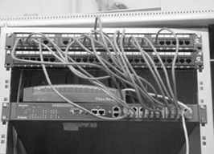
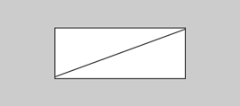

Configuració de commutadors
Un commutador o switch és un aparell per fa cilitar la comunicació en una xarxa d’àrea local. És un dispositiu de capa 2 capaç de prendre decisions que fa que la xarxa d’àrea local sigui molt més eficient. Els commutadors realitzen aquesta tasca commutant les dades cap al port on està connectat l’ordinador de destinació del paquet.
La tasca del commutador es concentrà en les connexions, fent que la transmissió de dades sigui més eficient. Aquest dispositiu commuta paquets des dels ports (interfícies) entrants fins als ports de sortida, subministrant a cada port l’amplada de banda total. El fet que només hagi de commutar dóna al dispositiu una gran velocitat.
Funcionament dels commutadors
Un commutador transmet els paquets cap al port adequat gràcies al fet que coneix totes les MAC que hi ha connectades a cadascun dels seus ports. Quan un commutador rep un paquet, l’analitza per comprovar-ne la destinació; quan identifica la MAC de destinació, decideix per quin dels seus ports s’ha de transmetre aquest paquet. Un cop identificat, el commutador lliura tota l’amplada de banda de què disposa per a aquesta comunicació.
- 
- Imatge d'un commutador amb totes les seves connexions, i amb la majoria de ports ocupats.
En el cas que veurem tot seguit, es disposa d’una xarxa amb les característiques següents: un commutador realitza les distribucions i a l’encaminador d’entrada a aquesta xarxa hi arriben paquets destinats a l’ordinador F i paquets destinats a l’ordinador D.
- Paquet per a l'ordinador F.
En la xarxa de la figura s’ha representat l’arribada de tres paquets: el primer i el tercer estan destinats a la màquina F i el segon està destinat a la màquina D.
- 
- Paquet per a l'ordinador D
El commutador rep el primer paquet de l’encaminador d’entrada (figura), fa una comprovació, desmunta l’encapçalament del paquet i llegeix el contingut per tal de comprovar quina és la màquina de destinació de les dades. Un cop localitzada l’adreça de destinació, comprova a la seva taula interna cap a quin port ha d’enviar aquest paquet i realitza la commutació a gran velocitat. És preferible utilitzar aquest dispositiu en comptes d’un encaminador, ja que és més lent a l’hora de fer la transmissió.
Un cop realitzada la comprovació, el commutador transmet el paquet pel port corresponent (figura), utilitzant sempre tota l’amplada de banda de què disposa.
Després d’haver fet la transmissió, el commutador ja es pot dedicar al paquet de dades següent (figura).
Quan el commutador rep el segon paquet, executa els mateixos passos que ha realitzat amb el primer: busca a l’encapçalament del paquet l’adreça de destinació i, un cop localitzada, l’envia pel port més adient (figura), que troba indicat a la seva taula interna.
Per transmetre el segon paquet, el commutador proporciona a aquesta transmissió tota l’amplada de banda de què disposa. Un cop finalitzada aquesta transmissió, el commutador ja es pot dedicar a un nou paquet (figura).
Quan arriba el tercer paquet al commutador (figura), els passos es tornen a repetir: la comprovació de la destinació, l’elecció del port pel qual transmetrà les dades i finalment la transmissió.

El commutador és un element d’interconnexió amb capacitat per prendre decisions: comprova l’adreça final d’un paquet i el transmet pel port més adient -és a dir, per aquell on és l’ordinador de destinació.
Configuració bàsica
Perquè el commutador funcioni correctament, cal programar-lo de la manera adient. Aquesta programació es realitzarà des d’un ordinador connectat al commutador per una interfície especial dedicada a aquesta tasca.
- Logotip de Windows
La connexió al commutador per configurar-lo es farà amb una aplicació adequada.
Si el sistema operatiu que utilitzeu és un de la família Windows, l’aplicació per realitzar aquesta connexió pot ser l’Hyperterminal (figura). A la versió XP el mateix sistema operatiu incorpora aquesta aplicació.
Durant el curs utilitzarem un simulador de xarxes per realitzar les configuracions. Per aquest motiu, no serà imprescindible utilitzar el programa HyperTerminal ni cap de similar. No obstant això, és molt recomanable almenys llegir el que es diu d’aquests programes per saber com funcionen. Són els que caldrà utilitzar a la realitat.
Un cop l’aplicació està en marxa, només cal introduir-hi un nom adequat per guardar el tipus de connexió i configurar el port (figura) amb el qual s’ha fet la connexió entre el commutador i la vostra màquina.
Un cop seleccionat correctament el port al qual teniu el commutador connectat, cal configurar el programa (figura) per tenir una comunicació correcta entre el commutador i la vostra màquina. Penseu que una configuració incorrecta provocaria que les dues màquines no es pugessin entendre i, per tant, no veuríeu la pantalla de configuració del commutador, sinó només una pantalla en blanc en la qual no podríeu fer res. Si això passés, hauríeu d’aturar la connexió, tornar a configurar el programa adequadament i tornar a provar de fer la connexió.
La pantalla que veieu en la figura mostra les dades adequades per a la transmissió entre el vostre ordinador i el commutador: una velocitat de transferència de 9.600 bps, 8 bits de dades a cada trama transmesa, cap bit de paritat o control d’errors, un bit d’aturada i cap mena de control de flux.
Després d’haver fet la configuració correctament, ja es pot començar la configuració del commutador.
En cas que feu servir un sistema operatiu de codi obert -és a dir, un Linux-, es pot configurar el commutador amb l’aplicació gtkterm (figura), una aplicació molt similar a l’Hyperterminal que utilitza Windows. Si no disposeu d’aquesta aplicació, caldrà que us baixeu d’Internet el paquet rpm adient i us l’instal·leu.
Observació
A les versions de Windows posteriors a XP ha desaparegut l’aplicació Hyperterminal. Podeu utilitzar al seu lloc l’aplicació PuTTY (www.putty.org). Els paràmetres de la connexió seran els mateixos que al cas d’Hyperterminal.
- Logotip de Linux
L’aplicació de Linux també necessita una configuració per adaptar les dades a la velocitat del commutador. Per configurar-la, cal anar a Configuració i en el menú que es desplega seleccionar Port. Un cop seleccionat, s’obrirà la finestra de configuració de la figura.
Cal seleccionar el port adient. Recordeu que utilitzeu Linux i el port COM 1 en Linux és el dispositiu /dev/ttyS0. La configuració ha de ser la mateixa que si utilitzéssiu Windows, ja que el commutador no té en compte el sistema operatiu de l’ordinador amb el qual es fa la connexió perquè disposa d’un sistema operatiu propi.
Configuració...
… de l’aplicació gtkterm per a la connexió entre l’ordinador i el commutador per transmetre la configuració. Si algun d’aquests paràmetres no coincideixen, la connexió no serà possible.
Un cop realitzades les configuracions oportunes, ja esteu en disposició de configurar un commutador. Com que segurament no disposareu de cap commutador o si en teniu algun no el voldreu utilitzar per no malmetre la configuració existent, farem servir un simulador per aprendre a configurar un commutador.
Utilitzarem el simulador Packet Tracer de Cisco Systems (figura), que permet simular qualsevol configuració de la xarxa. Cal recordar que només és un simulador i, per tant, pot haver-hi ordres correctes que no accepti.
Per afegir dispositius a la xarxa que simulem cal fer els següents clics:
- Al tipus de dispositiu que volem situar (part inferior esquerra de la finestra).
- Al dispositiu concret que volem afegir (part inferior esquerra de la finestra).
- Al lloc on el volem posar (requadre blanc gran).
A la figura figura es mostren aquestes zones.
Per connectar dispositius de la xarxa que simulem cal fer els següents clics:
- A la icona “raig” (part inferior esquerra de la finestra).
- Al tipus de cable que utilitzarem (part inferior esquerra de la finestra).
- Al primer dispositiu a connectar (dins del requadre blanc gran). Surt un desplegable per triar la interfície associada al cable.
- Al segon dispositiu a connectar (exactament igual que al pas anterior).
A la figura figura es mostra on cal fer aquests clics per unir dos commutadors.
Amb aquest simulador, quan feu clic a sobre d’un dispositiu i, a la finestra que apareix, seleccioneu la pestanya CLI, veureu una pantalla com la de la figura, que seria la mateixa que veuríeu si empréssiu les aplicacions comentades abans (Hyperterminal i gtkterm) per configurar un commutador físicament.
Un cop en aquesta pantalla, si premeu la tecla de retorn o Enter començareu la configuració del commutador. Heu de tenir en compte que hi ha diferents modes de treballar tant en un commutador com en un encaminador.
- Mode d’usuari: tindreu un accés limitat a l’encaminador. Per saber que esteu treballant en aquest mode, heu de mirar si l’aspecte de l’indicador (prompt) és Switch.
- Mode privilegiat: tindreu més accés al commutador; així doncs, podreu fer una anàlisi detallada de l’estat del commutador i podreu manipular els arxius de configuració. Per saber que esteu en mode privilegiat, també heu de mirar si l’indicador té la forma Switch#, on Switch és el nom que s’ha donat al commutador.
- Mode de configuració global: podeu utilitzar ordres de configuració simples. Per saber que esteu en aquest mode, l’aspecte de l’indicador ha de ser Switch(config)#.
- Altres modes de configuració: permet configuracions més detallades. Per saber que esteu en aquest mode també heu d’observar l’indicador; en aquest cas tindrà un aspecte similar a Switch(config - mode)#, on el mode indica quina configuració feu:
- Switch(config - if)# configuració d’una interfície
- Switch(config - line)# configuració d’una línia de terminal
Tingueu en compte que quan tindreu més problemes és quan treballeu amb els diferents modes, ja que intentareu configurar-ne alguna des d’un mode equivocat amb les ordres correctes i no trobareu on és l’error.
Cada mode accepta unes ordres determinades. A continuació us presentem una llista de les ordres que es poden utilitzar des dels diferents modes. Més endavant es veuran amb més detall les ordres que utilitzarem:
Mode d’usuari:
- enable: canvia a mode privilegiat.
- exit: surt del mode d’execució.
- ? : ajuda.
- ping: comprova les connexions.
- show: mostra la informació en execució.
- traceroute: mostra la ruta des de l’origen fins a la destinació.
Mode privilegiat:
- clear: reinicialitza (reset) les funcions.
- configure: entra al mode de configuració.
- copy: copia la configuració al microprogramari o firmware.
- delete: reinicialitza la configuració.
- disable: surt del mode privilegiat.
- enable: entra al mode privilegiat.
- exit: surt del mode d’execució.
- ? : ajuda.
- ping: comprova les connexions.
- reload: atura i reinicialitza el commutador.
- show: mostra la informació en execució.
- tracerute: mostra la ruta des de l’origen fins a la destinació.
Mode de configuració global:
- banner: defineix un text d’inici.
- cdp: configura subordres.
- enable: modifica paràmetres de les contrasenyes.
- end: surt del mode de configuració.
- exit: surt del mode de configuració.
- hostname: canvia el nom del commutador.
- interface: selecciona una interfície per configurar-la.
- ip: ordres de configuració d’adreça IP global.
- line: configura una línia de terminal.
- mac-address-table: configura la taula d’adreces MAC.
- service: ordres de configuració.
- switching-mode: canvia els modes del commutador.
- uplink-fast: activa la unió ràpida.
- vlan: configura el servidor vlan.
- vlan-membership: configura els membres del servidor vlan.
- vtp: ordres de configuració vtp.
Mode de configuració d’interfície:
- cdp: subordres d’interfície cdp.
- description: descriu específicament una interfície.
- duplex: configura una operació dúplex.
- exit: surt del mode de configuració de la interfície.
- port: configura els ports del commutador.
- shutdown: desactiva la interfície.
- vlan-membership: configura els membres del servidor vlan.
Després de comentar algunes de les ordres utilitzades per configurar commutadors, en podeu provar algunes al simulador d’encaminadors i commutadors.
L’ordre enable s’utilitza per canviar de mode d’usuari a mode privilegiat: com es pot veure en la figura, l’indicador ha canviat després d’executar l’ordre enable en passar de ser > a ser #.

Per passar a mode de configuració global i poder començar la configuració del commutador, es fa servir l’ordre configure terminal. Com es pot veure en la figura, l’indicador ha tornat a canviar. Cal estar molt atent al que mostra l’indicador, ja que ens diu en cada moment en quin mode es treballa. Si no ho tenim en compte, podem desconfigurar l’encaminador totalment.
Un cop s’ha passat al mode de configuració, es pot començar la configuració amb un canvi que no afecti gaire les condicions del commutador: per exemple, es proposa canviar-li el nom.
Les ordres i els paràmetres poden abreujar-se tant com es vulgui mentre no es produeixi cap ambigüitat amb una altra ordre o un altre paràmetre que comenci igual. Així, per exemple, enable pot escriure’s ena i configure terminal pot escriure’s conf t.
Per canviar-li el nom s’ha d’aplicar l’ordre hostname nom_de_commutador (figura) des del mode de configuració global.
Una altra configuració seria assignar una descripció a la interfície FastEthernet 0/1; per a això s’ha d’entrar a mode de configuració de la interfície (figura).
Es canviarà de mode aplicant l’ordre interface FastEthernet 0/1. Una vegada en mode de configuració de la interfície, podem assignar-li una descripció (figura).
Canvi
El canvi de mode de configuració global a configuració d’interfície es realitza per poder introduir les configuracions adients a la interfície seleccionada.
Per introduir una descripció a la interfície FastEthernet 0/1 cal aplicar l’ordre description (descripció), on descripció és la descripció que vulguem donar-li.
Amb la interfície FastEthernet 0/1 configurada, es pot comprovar aquesta interfície amb l’ordre show interface FastEthernet 0/1. Aquesta ordre s’ha d’executar des del mode privilegiat; per tant, primer caldrà sortir del mode de configuració global amb l’ordre end.
Un cop aplicada l’ordre show interface FastEthernet 0/1 (figura) es pot observar diferent informació sobre aquesta interfície del commutador: el tipus de cable utilitzat en la connexió, l’adreça en format hexadecimal i l’amplada de banda disponible. Cal tenir en compte que el commutador lliura a cada connexió tota l’amplada de banda disponible i, per tant, cal estar informat de la quantitat d’aquesta. També es pot veure una taula d’estadístiques tant de dades transmeses com de dades rebudes.
Una altra qüestió que s’ha de tenir en compte a l’hora de configurar un commutador és la taula d’adreces MAC. Aquesta taula es configurarà utilitzant l’ordre mac-address-table.
Cal poder comprovar en tot moment la configuració de les interfícies.
Per comprovar la configuració de la taula d’adreces MAC (figura) n’hi ha prou de mostrar-la amb l’ordre show mac-address-table des del mode privilegiat.
La taula d’adreces MAC és una part important per al funcionament correcte del commutador.
Una vegada s’han realitzat totes les configuracions, es pot provar si s’ha configurat adequadament, és a dir, si hi ha connexió amb totes les màquines que hi ha connectades als ports del commutador. Per comprovar-ho, s’utilitzarà la mateixa ordre que es fa servir quan es comprova des d’un ordinador normal, l’ordre ping IP.
Finalitzada la configuració del commutador, s’ha de guardar una còpia de l’arxiu de configuració per si fos necessari tornar-lo a enviar al commutador. Per copiar la configuració, s’utilitzarà l’ordre copy running-config tftp. S’ha de tenir en compte que per poder-la fer, cal tenir una aplicació de transmissió de dades que utilitzi el protocol TFTP.
Quan utilitzeu aquesta ordre per guardar una còpia de l’arxiu de configuració, el programa us farà un seguit de preguntes del tipus nom del fitxer o destinació del fitxer, etc.
Un cop indicat com es dirà l’arxiu de configuració i on s’emmagatzemarà, es transmetran les dades. Cal guardar-les en un lloc segur, perquè si fos necessari tornar a configurar el commutador, aquest arxiu estalviarà molta feina.
Com podeu comprovar, en executar l’ordre copy running-config tftp (figura), el commutador us demana l’adreça o nom de l’ordinador on voleu guardar la configuració i el nom amb què voleu emmagatzemar l’arxiu de configuració.
Perquè funcioni correctament l’ordre copy running-config tftp cal haver configurat prèviament una adreça IP d’administració al commutador. Podeu trobar com es fa a l’apartat “VLAN d’administració”.
Sempre cal tenir una còpia de l’arxiu de configuració guardada.
Aquesta adreça IP no intervé a la gestió de l’encaminador. Només s’utilitza per administrar remotament el dispositiu.
El dispositiu té la configuració a la memòria RAM (encara que haguem fet una còpia sobre un servidor). Si ens interessa que la configuració es mantingui encara que apaguem el commutador i el tornem a posar en marxa, cal gravar aquesta configuració a una memòria permanent (nvram en aquest cas). Així, en posar en marxa el commutador, treballarà amb aquesta configuració. Per aconseguir-ho, s’ha d’executar l’ordre copy running-config start-config.
Una ordre de molta utilitat és l’ordre ? (figura), ja que es pot utilitzar en qualsevol moment perquè ens mostri totes les ordres que es poden fer servir en cada mode.
En la figura s’ha utilitzat l’ordre ? en el mode de configuració global: el resultat ens mostra totes les ordres que es poden emprar des d’aquest mode, cosa que resulta de gran ajuda.
Si s’executa aquesta ordre en mode privilegiat, s’obté la llista d’ordres de la figura.
L’ordre ? també serveix quan es configura la IP i no se sap el que s’ha de posar; s’escriu a continuació de l’ordre que s’utilitzava i ens mostrarà les possibilitats.
La configuració del commutador és molt important per a un funcionament correcte de la xarxa. Recordeu que hi ha quatres modes de configuració:
- Mode d’usuari
- Mode privilegiat
- Mode de configuració global
- Altres modes de configuració
L’estat de l’indicador mostra en tot moment en quin mode de configuració us trobeu.
Definició i configuració de VLAN
Les virtual LAN (xarxes d’àrea local virtuals, VLAN) són una manera de crear xarxes lògiques dins d’una mateixa xarxa física. Per tant, hi poden haver diverses xarxes dins d’un mateix medi físic o bé, mitjançant un enllaç troncal, hi poden haver en una mateixa xarxa certs ports de diversos commutadors.
Gràcies a les VLAN podem fer més petits els dominis de difusió i permetre així una gestió millor dels segments de la xarxa. Per exemple, podem agrupar mitjançant VLAN els departaments d’una empresa per tal que transfereixin dades entre si directament i en cas que necessitin traspassar dades amb un altre departament ho puguin continuar fent mitjançant encaminament.
El domini de difusió o domini de broadcast és el conjunt de dispositius que poden rebre els paquets multidifusió del segment.
Mitjançant les VLAN també es millora la seguretat, ja que podem aplicar filtres entre les VLAN per evitar trànsit no volgut.
Hi ha diversos protocols que permeten crear aquestes xarxes virtuals, però el més estès és IEEE 802.1Q.
Presentació de les VLAN
Per a entendre per què s’utilitzen tant avui dia les VLAN, considereu una petita comunitat amb dormitoris d’estudiants i oficines per al cos docent, tot en un únic edifici. La figura mostra els equips dels estudiants en una xarxa i els equips dels docents en una altra. Com que tots els departaments estan físicament junts, el sistema funciona correctament i és prou senzill proporcionar a tots els usuaris els serveis de la xarxa.
Després d’un any, el centre ha crescut i ara té tres edificis (figura).
En la figura, la xarxa original és la mateixa però els equips dels estudiants i dels docents estan distribuïts en tres edificis. Ara, el departament de sistemes de la informació (SI) es vol assegurar que tots els equips comparteixen les mateixes característiques de seguretat, controls d’amplada de banda, etc. Com s’han d’implementar les necessitats compartides dels departaments, separats geogràficament?, cal crear una gran LAN i connectar per cable tots els departaments junts?, és gaire costós fer canvis en aquesta xarxa?, etc. És ideal agrupar els usuaris amb els recursos que utilitzen, sense tenir en compte la seva situació geogràfica, i a més s’aconseguiria una administració més senzilla de la seguretat específica i les necessitats d’amplada de banda.

En el cas del centre educatiu, cal utilitzar una tecnologia de xarxa anomenada virtual LAN (VLAN). Una VLAN permet que un administrador de xarxa creï grups de dispositius connectats a la xarxa de manera lògica i que actuïn com si fossin en una xarxa independent. Mitjançant les VLAN, es poden segmentar de manera lògica les xarxes commutades basades en departaments, funcions professionals, projectes, etc.
Una VLAN és una subxarxa IP, separada de manera lògica. Les VLAN permeten que xarxes i subxarxes IP coexisteixin en la mateixa xarxa commutada. La figura mostra una xarxa amb tres PC. Perquè els equips es comuniquin en la mateixa VLAN, cadascun d’aquests equips ha de tenir una adreça IP i una màscara de subxarxa coherent amb la VLAN a què pertanyen. En el commutador (switch) s’han de donar d’alta les VLAN i assignar a cada port la VLAN corresponent. Recordeu que si dos ordinadors estan connectats físicament al mateix commutador, no significa que es puguin comunicar. Els dispositius en dues xarxes o subxarxes separades s’han de comunicar mitjançant un encaminador (capa 3), tant si s’utilitzen les VLAN com si no. No es necessiten les VLAN per a tenir diferents xarxes i subxarxes en una xarxa commutada, però hi ha avantatges reals utilitzant VLAN.
Tipus de VLAN
Hi ha varietat de termes per a les VLAN. Alguns termes defineixen el tipus de trànsit de xarxa que envia i d’altres defineixen la funció específica que desenvolupa la VLAN. A continuació descrivim la terminologia comuna per a VLAN.
VLAN de dades
Una VLAN de dades és una VLAN configurada per enviar únicament trànsit de dades generat per l’usuari. Una VLAN pot enviar trànsit basat en veu o trànsit utilitzat per administrar el commutador, però aquest trànsit no és part d’una VLAN de dades. És una pràctica comuna separar el trànsit de veu i administració del trànsit de dades. Això fa identificar les VLAN que només poden enviar dades d’usuari: VLAN de dades o VLAN d’usuari.
VLAN predeterminada
Per defecte, tots els ports del commutador són a la VLAN predeterminada; per tant, són dins del mateix domini de multidifusió. Normalment, la VLAN 1 és la VLAN predeterminada a tots els commutadors. Aquesta VLAN predeterminada és com qualsevol VLAN, tret que no es pot reanomenar i no es pot eliminar.
Pel que fa a la seguretat, és convenient modificar la VLAN predeterminada a una VLAN que no sigui la VLAN 1; això implica configurar tots els ports en el commutador perquè s’associïn amb una VLAN predeterminada que no sigui la VLAN 1.
VLAN predeterminada
Alguns administradors de xarxa utilitzen el terme VLAN predeterminada per referir-se a una VLAN que no sigui la VLAN 1, que l’administrador va definir com la VLAN on s’assignen tots els ports que no estan en ús. En aquest cas, l’única funció que compleix la VLAN 1 és la d’utilitzar el trànsit de capa 2 per la xarxa.
VLAN nativa
S’assigna una VLAN nativa a un port troncal. Un port d’enllaç troncal admet el trànsit que arriba de moltes VLAN (trànsit etiquetat) i també el trànsit que no arriba d’una VLAN (trànsit sense etiquetar). El port d’enllaç troncal deixa el trànsit no etiquetat en la VLAN nativa. La finalitat de les VLAN natives és mantenir la compatibilitat amb les LANs antigues, que no suporten VLANs.
Els enllaços troncals admeten la transmissió de trànsit des de més d’una VLAN.
VLAN d'administració
Una VLAN d’administració és qualsevol VLAN que es configura per accedir remotament a les capacitats administratives d’un commutador. S’assigna una adreça IP i una màscara de subxarxa a la VLAN d’administració i, mitjançant HTTP, Telnet o SSH, es pot accedir al commutador. Generalment els commutadors tenen la VLAN 1 com a VLAN predeterminada; per tant, designar aquesta VLAN com a VLAN d’administració no és una bona decisió sota el punt de vista de la seguretat.
Per assignar una adreça IP a la VLAN administrativa cal introduir aquestes ordres:
Switch(config)#interface vlan nroVlan
Switch(config-if)#ip address adreçaIP màscara
Per configurar la seva passarel·la (a fi que tingui connectivitat amb xarxes remotes):
Switch(config)#ip default-gateway adreçaPassarel·la
Per veure la configuració de la VLAN:
Switch#show interface vlan nroVlan
Per exemple (el pas del mode config-if a config es fa automàticament):
Switch(config)#interface vlan 20 Switch(config-if)#ip address 192.168.0.2 255.255.255.0 Switch(config-if)#ip default-gateway 192.168.0.1 Switch(config)#exit Switch#show interface vlan 20
Els ports de commutador
Els ports de commutador són interfícies de capa 2 associats únicament a un port físic. Els ports de commutació no fan encaminament de capa 3 i poden pertànyer a una VLAN o a més d’una.
Quan es configura una VLAN s’ha d’assignar un nombre d’ID i també es pot assignar, si es vol, un nom. L’usuari pot configurar un port per a pertànyer a una VLAN, assignant el mode de port que especifiqui el tipus de trànsit que envia el port i les VLAN a què pertany. Es pot configurar un port per a admetre aquests tipus de VLAN:
- VLAN estàtica. Les VLAN estàtiques es configuren manualment d’una a una i els ports s’assignen també manualment a una VLAN. Vegeu el manual de configuració del fabricant del commutador per a veure com s’han de fer aquestes configuracions. En el cas de Cisco, mitjançant una connexió de consola:
Switch#configure terminal Enter configuration commands, one per line. End with CNTL/Z. Switch(config)#interface fastEthernet 0/18 Switch(config-if)#switchport access vlan 20 Switch(config-if)#end Switch#
- VLAN dinàmica. Aquest mode s’utilitza molt en xarxes de gran producció i no es treballa en aquest mòdul. Tot i això, és útil saber què és una VLAN dinàmica. La filiació d’una VLAN de port dinàmic es configura utilitzant un servidor especial, anomenat servidor de política de filiació d’una VLAN (VMPS). Amb el VMPS, s’assignen ports de commutació a les VLAN basades en l’adreça MAC d’origen del dispositiu connectat al port. El benefici és que, quan es trasllada un amfitrió o host des d’un port en un commutador cap a un port d’un altre commutador, aquest commutador assigna de manera dinàmica el nou port a la VLAN adequada per a l’amfitrió.
A la figura podeu veure, de forma gràfica, els diferents modes de port:
Control dels dominis de difusió amb les VLAN
En condicions de funcionament normal, quan un commutador rep una trama de multidifusió per un dels ports, reenvia la trama per tots els altres ports. En la figura, tota la xarxa està configurada en la mateixa subxarxa (172.17.40.0/24), i com a resultat d’això, quan el PC1 envia una trama de multidifusió, el commutador S2 envia aquesta trama a tots els seus ports, i tota la xarxa la rep. La xarxa és un domini de multidifusió.

1. Xarxa amb VLAN
En la figura, s’ha dividit la xarxa en dues VLAN: VLAN 10, per als docents, i VLAN 20, per als estudiants. Quan s’envia la trama de multidifusió des del PC1 cap al commutador S2, aquest commutador envia la trama només als ports del commutador configurats a la VLAN 20.
En la figura, els ports que comuniquen els commutadors S2 i S1 (ports F0/1) i entre S1 i S3 (ports F0/3) han sigut configurats per a admetre totes les VLAN de la xarxa. Aquesta connexió s’anomena enllaç troncal. Més endavant parlarem d’aquests tipus d’enllaç.
Quan S1 rep la trama de multidifusió pel port F0/1, l’envia per l’únic port configurat per a admetre trànsit de la VLAN 10, el port F0/3. Quan S3 rep la trama de multidifusió pel port F0/3, l’envia per l’únic port configurat per a admetre trànsit de la VLAN 10, el port F0/11. La trama arriba a l’únic PC en la VLAN 10, el PC4 dels docents.
2. Comunicació intra-VLAN
En la figura, el PC1 es vol comunicar amb el PC4. Tots dos són a la mateixa VLAN, la VLAN 10. La comunicació amb un dispositiu de la mateixa VLAN s’anomena comunicació intra-VLAN.

A continuació descrivim com es fa aquest procés de comunicació:
- El PC1 de la VLAN 10 envia la trama de sol·licitud ARP (multidifusió/broadcast) al commutador S2. Els commutadors S2 i S1 envien la trama ARP a tots els ports de la VLAN 10. El commutador S3 envia la trama al port F0/11 per al PC4 en la VLAN 10.
- Els commutadors envien la trama de resposta ARP (difusió/unicast) al PC1, que rep la resposta que conté l’adreça MAC del PC4.
- El PC1 ja té l’adreça MAC de destí de PC4 i la utilitza per a crear una trama de difusió amb aquesta adreça MAC, com a destí. Els commutadors S2, S1 i S3 envien la trama al PC4.
3. Comunicació entre VLAN
Hi ha dues connexions des de S1 fins a l’encaminador: una per a treballar en la VLAN 10 i una altra per a enviar les transmissions de la VLAN 20 cap a l’encaminador.
En la figura, el PC1 és a la VLAN 10 i es vol comunicar amb el PC5 de la VLAN 20. La comunicació amb un dispositiu d’una altra VLAN s’anomena comunicació entre VLAN.
A continuació descrivim el procés de comunicació:
- El PC1 (VLAN 10) es vol comunicar amb el PC5 en la VLAN 20. El PC1 envia una trama de sol·licitud d’ARP per la direcció MAC de la passarel·la o gateway predeterminada, R1.
- L’encaminador R1 respon amb una trama de resposta ARP des de la interfície configurada en la VLAN 20. Tots els commutadors envien la trama de resposta ARP, i el PC la rep. La resposta ARP conté l’adreça MAC de la passarel·la predeterminada.
- Llavors, el PC1 crea una trama Ethernet amb l’adreça MAC de la passarel·la predeterminada. La trama s’envia d’S2 a S1.
- L’encaminador R1 envia una trama de sol·licitud d’ARP en la VLAN 20 per determinar l’adreça MAC del PC5. Els commutadors S1, S2 i S3 envien la trama de sol·licitud d’ARP als ports de la VLAN 20. El PC5, en la VLAN 20, rep la trama de sol·licitud de l’encaminador R1.
- El PC5 envia la trama de resposta al commutador S3. Els commutadors S3 i S1 envien la trama a l’encaminador R1 amb l’adreça MAC de destí de la interfície F0/2 a l’encaminador R1.
- L’R1 envia la trama rebuda del PC1 pels commutadors S1 i S3 al PC5 (en la VLAN 20).
Configuració de les VLAN
Independentment que les VLAN siguin estàtiques o dinàmiques, la quantitat màxima de VLAN depèn del tipus de commutador i de l’IOS (sistema operatiu). De manera predeterminada, la VLAN 1 és la VLAN d’administració.
L’administrador utilitza l’adreça IP de la VLAN d’administració per a configurar el commutador en remot. Com que té accés remot al commutador, l’administrador pot configurar i mantenir totes les configuracions de la VLAN (figura).
L’adreça IP de la VLAN 1 s’utilitza per a tenir accés remot al commutador i configurar-lo. També es fa servir per a intercanviar informació amb altres dispositius de xarxa.
Com ja hem comentat, en crear una VLAN, s’assigna un nom i un número. El número de la VLAN pot ser qualsevol número del rang disponible del commutador, excepte la VLAN 1. Mireu el manual del fabricant per a saber el nombre màxim de VLAN que admet el dispositiu.
En el cas de commutadors Cisco, utilitzeu les ordres següents per a crear una VLAN segons el mode de configuració global:
Switch(config)#vlan vlan_number Switch(config-vlan)#name vlan_name Switch(config-vlan)#exit
De manera predeterminada, tots els ports són membres de la VLAN 1. Els ports s’assignen a les VLAN de manera individual o per rangs:
Switch(config)#interface fa0/port_number Switch(config-if)#switchport access vlan vlan_number Switch(config-if)#exit
Per a assignar un rang de ports a una VLAN:
Switch(config)#interface range fa0/start_of_range - end_of_range Switch(config-if)#switchport access vlan vlan_number Switch(config-if)#exit
Exemple de configuració d’una VLAN:
Switch#config terminal
Enter configuration commands, one per line. End with CNTL/Z.
Switch(config)#vlan 27
Switch(config-vlan)#name vendes
Switch(config-vlan)#exit
Switch(config)#interface fa0/13
Switch(config-if)#switchport access vlan 27
Switch(config-if)#exit
Switch(config)#vlan 28
Switch(config-vlan)#name sistemes
Switch(config-vlan)#exit
Switch(config)#interface rang fa0/6-12
Switch(config-if-range)#switchport access vlan 28
Switch(config-if-range)#exit
Switch(config)#end
Switch#show vlan
VLAN Name Status Ports
---- -------------------------------- --------- -------------------------------
1 default active Fa0/1, Fa0/2, Fa0/3, Fa0/4
Fa0/5, Fa0/14, Fa0/15, Fa0/16
Fa0/17, Fa0/18, Fa0/19, Fa0/20
Fa0/21, Fa0/22, Fa0/23, Fa0/24
27 vendes active Fa0/13
28 sistemes active Fa0/6, Fa0/7, Fa0/8, Fa0/9
Fa0/10, Fa0/11, Fa0/12
1002 fddi-default act/unsup
1003 token-ring-default act/unsup
1004 fddinet-default act/unsup
1005 trnet-default act/unsup
VLAN Type SAID MTU Parent RingNo BridgeNo Stp BrdgMode Trans1 Trans2
---- ----- ---------- ----- ------ ------ -------- ---- -------- ------ ------
1 enet 100001 1500 - - - - - 0 0
27 enet 100027 1500 - - - - - 0 0
28 enet 100028 1500 - - - - - 0 0
1002 fddi 101002 1500 - - - - - 0 0
1003 tr 101003 1500 - - - - - 0 0
1004 fdnet 101004 1500 - - - ieee - 0 0
1005 trnet 101005 1500 - - - ibm - 0 0
Remote SPAN VLANs
------------------------------------------------------------------------------
Primary Secondary Type Ports
------- --------- ----------------- ------------------------------------------
Switch#
Per a verificar i fer tasques de manteniment i diagnòstic de fallades en les VLAN, és important l’IOS i les ordres clau de l’IOS. En el cas del Cisco IOS, l’ordre show és una de les ordres importants per a obtenir informació de les VLAN del dispositiu.
show vlan
Mostra la llista detallada de tots els números i noms de les VLAN, actius al commutador, i els ports associats. També mostra estadístiques d’STP si està configurat en les VLAN.
VLAN Name Status Ports
---- -------------------------------- --------- -------------------------------
1 default active Fa0/1, Fa0/2, Fa0/3, Fa0/4
Fa0/5, Fa0/14, Fa0/15, Fa0/16
Fa0/17, Fa0/18, Fa0/19, Fa0/20
Fa0/21, Fa0/22, Fa0/23, Fa0/24
27 vendes active Fa0/13
28 sistemes active Fa0/6, Fa0/7, Fa0/8, Fa0/9
Fa0/10, Fa0/11, Fa0/12
1002 fddi-default act/unsup
1003 token-ring-default act/unsup
1004 fddinet-default act/unsup
1005 trnet-default act/unsup
VLAN Type SAID MTU Parent RingNo BridgeNo Stp BrdgMode Trans1 Trans2
---- ----- ---------- ----- ------ ------ -------- ---- -------- ------ ------
1 enet 100001 1500 - - - - - 0 0
27 enet 100027 1500 - - - - - 0 0
28 enet 100028 1500 - - - - - 0 0
1002 fddi 101002 1500 - - - - - 0 0
1003 tr 101003 1500 - - - - - 0 0
1004 fdnet 101004 1500 - - - ieee - 0 0
1005 trnet 101005 1500 - - - ibm - 0 0
Remote SPAN VLANs
------------------------------------------------------------------------------
Primary Secondary Type Ports
------- --------- ----------------- ------------------------------------------
show vlan brief
Mostra una llista abreujada, només de les VLAN actives i els ports associats a cadascuna d’aquestes VLAN.
Switch#show vlan brief
VLAN Name Status Ports
---- -------------------------------- --------- -------------------------------
1 default active Fa0/1, Fa0/2, Fa0/3, Fa0/4
Fa0/5, Fa0/14, Fa0/15, Fa0/16
Fa0/17, Fa0/18, Fa0/19, Fa0/20
Fa0/21, Fa0/22, Fa0/23, Fa0/24
27 vendes active Fa0/13
28 sistemes active Fa0/6, Fa0/7, Fa0/8, Fa0/9
Fa0/10, Fa0/11, Fa0/12
1002 fddi-default active
1003 token-ring-default active
1004 fddinet-default active
1005 trnet-default active
show vlan id id_number
Mostra informació d’una VLAN específica, segons el número d’ID.
Switch#show vlan id 28
VLAN Name Status Ports
---- -------------------------------- --------- -------------------------------
28 sistemes active Fa0/6, Fa0/7, Fa0/8, Fa0/9
Fa0/10, Fa0/11, Fa0/12
VLAN Type SAID MTU Parent RingNo BridgeNo Stp BrdgMode Trans1 Trans2
---- ----- ---------- ----- ------ ------ -------- ---- -------- ------ ------
28 enet 100028 1500 - - - - - 0 0
show vlan name vlan_name
Mostra informació d’una VLAN específica, segons el nom.
Switch#show vlan name sistemes
VLAN Name Status Ports
---- -------------------------------- --------- -------------------------------
28 sistemes active Fa0/6, Fa0/7, Fa0/8, Fa0/9
Fa0/10, Fa0/11, Fa0/12
VLAN Type SAID MTU Parent RingNo BridgeNo Stp BrdgMode Trans1 Trans2
---- ----- ---------- ----- ------ ------ -------- ---- -------- ------ ------
28 enet 100028 1500 - - - - - 0 0
En les organitzacions és molt comú que s’afegeixin, es traslladin o s’eliminin els empleats de departaments o projectes. Aquests canvis requereixen tasques de manteniment a la VLAN, que inclouen l’eliminació o la reassignació a diferents VLAN.
Quan un port es desvincula d’una VLAN específica, torna a formar part de la VLAN 1. Quan s’elimina una VLAN, es desactiven tots els ports que hi estaven associats, perquè la VLAN ja no hi és.
Per a eliminar una VLAN:
Switch(config)#no vlan vlan_number
Per a desvincular un port d’una VLAN específica:
Switch(config)#interface fa0/port_number
Switch(config-if)#no switchport access vlan vlan_number
Exemple d’eliminació de la VLAN 27 desassociant el port 8 de la VLAN 28:
Switch(config)#interface fa0/8
Switch(config-if)#no switchport access vlan 28
Switch(config-if)#exit
Switch(config)#no vlan 27
Switch(config)#end
Switch#show vlan
VLAN Name Status Ports
---- -------------------------------- --------- -------------------------------
1 default active Fa0/1, Fa0/2, Fa0/3, Fa0/4
Fa0/5, Fa0/8, Fa0/14, Fa0/15
Fa0/16, Fa0/17, Fa0/18, Fa0/19
Fa0/20, Fa0/21, Fa0/22, Fa0/23
Fa0/24
28 sistemes active Fa0/6, Fa0/7, Fa0/9, Fa0/10
Fa0/11, Fa0/12
1002 fddi-default act/unsup
1003 token-ring-default act/unsup
1004 fddinet-default act/unsup
1005 trnet-default act/unsup
VLAN Type SAID MTU Parent RingNo BridgeNo Stp BrdgMode Trans1 Trans2
---- ----- ---------- ----- ------ ------ -------- ---- -------- ------ ------
1 enet 100001 1500 - - - - - 0 0
28 enet 100028 1500 - - - - - 0 0
1002 fddi 101002 1500 - - - - - 0 0
1003 tr 101003 1500 - - - - - 0 0
1004 fdnet 101004 1500 - - - ieee - 0 0
1005 trnet 101005 1500 - - - ibm - 0 0
Identificació de les VLAN
Els dispositius connectats a una VLAN només es comuniquen amb altres dispositius de la mateixa VLAN, independentment que siguin en el mateix commutador o en commutadors diferents.
Un commutador associa cada port amb un nombre de VLAN específic. Quan una trama entra en aquest port, el commutador afegeix l’ID de la VLAN a la trama Ethernet. Aquest procés s’anomena etiquetatge de trama. L’estàndard d’etiquetatge de trama més freqüent és l’IEEE 802.1Q.
L’IEEE 802.1Q és l’estàndard de l’IEEE dissenyat per a permetre el trànsit entre LAN virtuals.
Les trames Ethernet tenen una grandària mínima de 64 bytes i un màxim de 1.518 bytes. Una trama Ethernet etiquetada pot tenir una grandària de fins a 1.522 bytes (figura).
Les trames contenen camps com:
- Les adreces MAC d’origen i destí.
- La longitud de la trama.
- Les dades de càrrega.
- La seqüència de verificació de trama (FCS).
Quan es connecta un port compatible amb 802.1Q a un altre port compatible amb 802.1Q, la informació d’etiquetatge VLAN es transmet entre aquests ports. En cas que el port no sigui compatible amb 802.1Q, s’elimina l’etiqueta VLAN abans de trametre la trama.
Unitat màxima de transferència (MTU)
La unitat màxima de transferència és un terme que expressa la grandària, en bytes, de la unitat de dades més gran que es pot enviar utilitzant un protocol d’Internet (IP). En el cas d’Ethernet, 1.518 bytes.
Si un dispositiu no habilitat per 802.1Q o un port d’accés rep una trama 802.1Q, s’ignoren les dades de l’etiqueta i la trama es commuta en la capa 2 com a trama Ethernet estàndard. Això permet instal·lar dispositius intermedis de capa 2, com altres commutadors o ponts, juntament amb dispositius 802.1Q. Per a processar una trama etiquetada, el dispositiu ha d’admetre una MTU de 1.522 o superior.
Enllaços troncals
Una VLAN té tres funcions principals:
- Limitar la grandària de dominis de multidifusió.
- Millorar el rendiment de la xarxa.
- Proporcionar un nivell de seguretat.
Per a aprofitar aquests beneficis, les VLAN s’estenen pels commutadors.
Els ports de commutació es poden configurar per a dues funcions diferents:
- Port d’accés.
- Port d’enllaç troncal.
Cada funció té les seves característiques:
- Port d’accés. Un port d’accés pertany a una única VLAN. Generalment, els dispositius individuals, com els PC o els servidors, es connecten a aquest tipus de port. Si un concentrador connecta diversos PC a un únic port d’accés, tots els dispositius connectats al concentrador són membres de la mateixa VLAN.
- Port d’enllaç troncal. Un port d’enllaç troncal és un enllaç punt a punt entre el concentrador i un altre dispositiu de xarxa. Aquests enllaços transmeten el trànsit de VLAN diferents mitjançant un únic enllaç, i permeten que les VLAN s’estenguin per tota la xarxa. Els ports d’enllaç troncal són necessaris per a transmetre el trànsit de diferents VLAN entre dispositius, ja que connecten dos commutadors entre si (un commutador a un encaminador o un amfitrió compatible amb enllaços troncals 802.1Q).

A la figura podeu veure un esquema amb diferents ports VLAN.
Sense aquests ports, cada VLAN necessita una connexió separada entre commutadors (figura). Per exemple, una empresa amb 100 VLAN necessita 100 enllaços de connexió. Aquest tipus de topologia no és fàcil d’escalar i resulta molt costosa. Els enllaços troncals ofereixen una solució a aquest problema ja que permeten transmetre trànsit de diferents VLAN mitjançant el mateix enllaç (figura).
Quan es transmeten diferents VLAN pel mateix enllaç, aquestes VLAN s’han d’identificar. Els ports d’enllaç troncal són compatibles amb l’etiquetatge de trama. L’etiquetatge de trama afegeix informació sobre les VLAN a la trama.
Els ports dels commutadors, de manera predeterminada, són ports d’accés. Per a configurar un port en mode port d’enllaç troncal, en el cas dels commutadors Cisco, s’han d’utilitzar les ordres següents:
- Switch(config)#interface fa0/port_number
- Switch(config-if)#switchport mode trunk
- Switch(config-if)#switchport trunk encapsulation {dot1q | isl | negotiate}
Els commutadors que són compatibles amb 802.1Q i ISL necessiten l’últim fragment de configuració, {dot1q | isl | negotiate}. En molts d’aquests commutadors, negotiate és el mode predeterminat; detecta automàticament el tipus d’encapsulament del commutador veí.
L’ISL és un protocol propietat de Cisco per a l’etiquetatge de trames en una xarxa IEEE 802.11Q.
Els models actuals, però, ja no suporten l’encapsulament ISL i, per aquest motiu, no admeten la darrera ordre de la llista. Cap dels models que apareixen al simulador admeten aquesta instrucció (encapsulation {dot1q | isl | negotiate}).
Exemple de les ordres anteriors:
Switch(config)#interface fa0/24 Switch(config-if)#switchport mode trunk
Els commutadors més moderns tenen la capacitat de detectar el tipus d’enllaç configurat a l’altre extrem. Segons el servei connectat, l’enllaç es configura com a port d’enllaç troncal o com a port d’accés.
Això es configura així:
Switch(config-if)#switchport mode dynamic {desirable | auto}
Així, si connectem ports de dos commutadors, tots dos es converteix en enllaç troncal a tots els casos, excepte a les següents combinacions:
- Almenys un dels dos extrems és en mode access.
- Tots dos extrems són en mode dynamic auto.
A continuació teniu un exemple de configuració amb el mode dynamic:
Switch(config)#interface fa0/1 Switch(config-if)#switchport mode dynamic desirable
Per tornar a establir un port d’enllaç troncal després que s’hagi establert com a port d’enllaç d’accés, es poden utilitzar les ordres següents:
Switch(config)#interface fa0/port_number
Switch(config-if)#no switchport mode trunk
O també:
Switch(config-if)#switchport mode access
Extensions de VLAN als commutadors
Els enllaços troncals permeten enviar trànsit entre commutadors mitjançant un únic port.
Un enllaç troncal configurat amb 802.1Q en tots dos extrems permet transmetre trànsit amb un camp d’etiquetatge de 4 bytes, que s’afegeix a la trama. Aquesta etiqueta conté l’ID de la VLAN.
Quan un commutador rep una trama etiquetada per un port d’enllaç troncal, elimina l’etiqueta abans d’enviar-la a un port d’accés. El commutador només envia la trama si el port d’accés és de la mateixa VLAN que la trama etiquetada.
Tanmateix, és necessari que hi hagi cert trànsit que es trameti per l’enllaç configurat segons 802.1Q, sense un ID de VLAN. El trànsit sense ID de VLAN s’anomena sense etiquetar. Entre els exemples de trànsit sense etiquetar hi ha el protocol de descobriment de Cisco (CDP), VTP i certs tipus de trànsit de veu. El trànsit sense etiquetar minimitza els retards associats amb la inspecció de l’etiqueta d’ID de la VLAN.
Per a processar el trànsit sense etiquetar, hi ha la VLAN nativa (figura). Les trames sense etiquetar rebudes en el port d’enllaç troncal pertanyen a la VLAN nativa. Generalment, la VLAN 1 és la VLAN nativa predeterminada.
CDP és un protocol de comunicació entre els encaminadors Cisco.
VTP és un protocol d’administració de VLANs en commutadors Cisco.
En un enllaç troncal amb 802.1Q, utilitzeu l’ordre següent per a assignar l’ID de la VLAN nativa a una interfície física:
Switch(config-if)#dot1q native vlan vlan-id
Switch(config-if)#dot1q native vlan 3
Encaminament entre VLAN
Tot i que les VLAN s’estenen per a agrupar diversos commutadors, només es poden comunicar els membres de la mateixa VLAN.
Un dispositiu de capa 3 proporciona connectivitat entre diferents VLAN. Aquesta configuració permet que l’administrador de xarxa controli estrictament el tipus de trànsit que es transmet d’una VLAN a una altra (figura).
Un mètode per a fer l’adreçament entre VLAN requereix una connexió separada del dispositiu de capa 3 de cada VLAN.
Un altre mètode per a proporcionar connectivitat entre diferents VLAN requereix una funció anomenada subinterfície (figura). Les subinterfícies divideixen de manera lògica una interfície física en diferents rutes lògiques. És possible configurar una ruta o subinterfície per a cada VLAN.
La VLAN 1 es pot comunicar amb la VLAN 200 si cadascuna té una connexió dedicada a l’encaminador.
La compatibilitat amb la comunicació inter-VLAN mitjançant subinterfícies requereix configuració, tant en el commutador com en l’encaminador.
- Commutador
- Configurar la interfície del commutador com un enllaç troncal 802.1Q.
- Encaminador
- Seleccionar una interfície amb un mínim de 100 Mbps FastEthernet.
- Configurar subinterfícies compatibles amb l’encapsulament 802.1Q.
- Configurar una subinterfície per a cada VLAN.
Una subinterfície permet que cada VLAN tingui la seva pròpia ruta lògica i una passarel·la predeterminada a l’encaminador (figura).

L’amfitrió de la VLAN d’origen reenvia el trànsit a l’encaminador, mitjançant la passarel·la predeterminada. L’encaminador localitza l’adreça IP de destí i porta a terme una cerca en la taula d’encaminament.
Si la VLAN de destí és en el mateix commutador que la VLAN d’origen, l’encaminador torna a enviar el trànsit a l’origen mitjançant els paràmetres de la subinterfície de l’ID de la VLAN d’origen.
Si la interfície de sortida de l’encaminador és compatible amb 802.1Q, la trama conserva l’etiqueta de VLAN de 4 bytes. Si la interfície de sortida no és compatible amb 802.1Q, l’encaminador elimina l’etiqueta de la trama i retorna el format d’Ethernet original.
Per a configurar l’encaminament entre VLAN, feu els passos següents:
1. Configureu un port d’enllaç troncal al commutador.
Switch(config)#interface fa0/2 Switch(config-if)#switchport mode trunk
2. A l’encaminador: configureu una interfície FastEthernet, sense adreça IP ni màscara de xarxa.
Només cal posar no ip address si la interfície té assignada una adreça prèvia.
Router(config)#interface fa0/1 Router(config-if)#no ip address Router(config-if)#no shutdown
3. A l’encaminador, configureu una subinterfície amb una adreça IP i una màscara de xarxa per a cada VLAN. Cada subinterfície té un encapsulament 802.1Q.
Router(config)#interface fa0/0.10 Router(config-subif)#encapsulation dot1q 10 Router(config-subif)#ip address 192.168.10.1 255.255.255.0
4. Utilitzeu les ordres següents per a verificar la configuració i el funcionament de l’encaminament entre VLAN:
Switch#show trunk Router#show ip interfaces Router#show ip interfaces brief Router#show ip route
Compatibilitat amb VLAN per a telefonia IP i trànsit sense fil
El propòsit principal de les VLAN és separar el trànsit en grups lògics. El trànsit d’una VLAN no afecta el trànsit de l’altra. Un entorn de VLAN és idoni per al trànsit sensible als retards, com el trànsit de veu.
El trànsit de veu ha de tenir prioritat sobre el trànsit de dades normal, per a evitar conversacions mig tallades. Tenir una VLAN dedicada al trànsit de veu evita que aquest trànsit hagi de competir amb les altres dades per l’amplada de banda disponible.
Un telèfon per IP generalment té dos ports: un per a veu i un altre per a dades. Els paquets que s’envien entre l’equip i el telèfon per IP comparteixen el mateix enllaç físic i el mateix port, en el commutador. Per a segmentar el trànsit de veu, és necessari activar una VLAN separada, dedicada a aquest propòsit en el commutador (figura).
El trànsit sense fil també es beneficia del treball de les VLAN. El trànsit sense fil és, per naturalesa, molt poc segur i susceptible d’atacs externs. Un problema en la integritat de la VLAN sense fil no té efecte en les altres VLAN de l’organització.
En la majoria dels dissenys sense fil situen l’usuari d’una VLAN fora del tallafoc, per a proporcionar més seguretat. Els usuaris s’han d’autentificar per a utilitzar els serveis de la xarxa interna des de la xarxa sense fil.
A més, hi ha moltes organitzacions que ofereixen accés a convidats a la seva xarxa sense fils. Els comptes per a convidats proporcionen a qualsevol persona, dins del rang limitat, serveis temporals com accés al web, correu electrònic, FTP i SSH. Els comptes per a convidats estan inclosos en la VLAN sense fil o tenen una VLAN pròpia.
Consideracions en el disseny de les VLAN
Quan es planeja i es dissenya amb cura, les VLAN proporcionen seguretat, conserven l’amplada de banda i localitzen el trànsit en la xarxa. Totes aquestes funcions es combinen per a millorar el rendiment de la xarxa.
Algunes de les consideracions importants per a configurar VLAN en una xarxa són les següents:
- Organitzar la ubicació del servidor
- Assegureu-vos que tots els servidors necessaris per a cada grup són membres de la mateixa VLAN.
- Deshabilitar els ports que no s’utilitzen
- Desactiveu els ports que no s’utilitzaran.
- Fiqueu els ports en un VLAN no s’utilitzi.
- Per a no tenir accessos no autoritzats, no doneu connectivitat ni fiqueu cap dispositiu en una VLAN no utilitzada.
- Configurar les VLAN d’administració en un nombre que no sigui 1.
- Utilitzar el protocol d’enllaç troncal de VLAN.
- Reiniciar qualsevol commutador que es connecti a la xarxa.
No obstant això, les VLAN no són la resposta a tots els problemes. Si no s’implementen correctament, poden complicar la xarxa i provocar-hi connectivitat inconsistent i un baix rendiment.
VLAN en GNU/Linux
Fa temps que el nucli de Linux inclou suport per a 802.1Q. De fet, si utilitzeu el nucli precompilat de qualsevol distribució GNU/Linux, molt probablement, aquest suport ja hi està inclòs.
Si no teniu instal·lat el paquet vlan, ho podeu fer des de la consola:
apt-get install vlan
L’eina d’administració de VLAN és vconfig i és al paquet vlan en el cas d’Ubuntu, Debian i derivats. Un cop instal·lat el paquet i, si és necessari, carregat el mòdul 8021Q, és possible utilitzar vconfig per a crear adaptadors de xarxa virtuals connectats a diferents VLAN.
Així, per exemple, podeu crear un adaptador de xarxa virtual per a eth0 que estigui connectat a la VLAN2:
[root@localhost network-scripts]# modprobe 8021q
[root@localhost network-scripts]# vconfig
Expecting argc to be 3-5, inclusive. Was: 1
Usage: add [interface-name] [vlan_id]
rem [vlan-name]
set_flag [interface-name] [flag-num] [0 | 1]
set_egress_map [vlan-name] [skb_priority] [vlan_qos]
set_ingress_map [vlan-name] [skb_priority] [vlan_qos]
set_name_type [name-type]
* The [interface-name] is the name of the ethernet card that hosts the VLAN you are talking
about.
* The vlan_id is the identifier (0-4095) of the VLAN you are operating on.
* skb_priority is the priority in the socket buffer (sk_buff).
* vlan_qos is the 3 bit priority in the VLAN header
* name-type: VLAN_PLUS_VID (vlan0005), VLAN_PLUS_VID_NO_PAD (vlan5),
DEV_PLUS_VID (eth0.0005), DEV_PLUS_VID_NO_PAD (eth0.5)
* bind-type: PER_DEVICE # Allows vlan 5 on eth0 and eth1 to be unique.
PER_KERNEL # Forces vlan 5 to be unique across all devices.
* FLAGS: 1 REORDER_HDR When this is set, the VLAN device will move the
ethernet header around to make it look exactly like a real
ethernet device. This may help programs such as DHCPd which
read the raw ethernet packet and make assumptions about the
location of bytes. If you don't need it, don't turn it on, because
there will be at least a small performance degradation. Default
is OFF.
[root@localhost network-scripts]# vconfig add eth0 2
Added VLAN with VID == to IF -:eth0:-
[root@localhost network-scripts]# ifconfig eth0.2 192.168.20.20 up
[root@localhost network-scripts]# ifconfig eth0.2
eth0.2 Link encap:Ethernet HWaddr 00:C0:26:27:0B:D8
inet addr:192.168.20.20 Bcast:192.168.20.255 Mask:255.255.255.0
inet6 addr: fe80::2c0:26ff:fe27:bd8/64 Scope:Link
UP BROADCAST RUNNING MULTICAST MTU:1500 Metric:1
RX packets:0 errors:0 dropped:0 overruns:0 frame:0
TX packets:9 errors:0 dropped:0 overruns:0 carrier:0
collisions:0 txqueuelen:0
RX bytes:0 (0.0 b) TX bytes:1494 (1.4 KiB)
[root@localhost network-scripts]#
La notació per defecte implica que l’adaptador de xarxa virtual té el nom de l’adaptador de xarxa físic, amb sufix .id_vlan (per exemple, eth0.2 és l’adaptador virtual d’eth0, que és en la VLAN 2). A partir d’aquest punt, l’adaptador de xarxa virtual es pot utilitzar com qualsevol altre interfície de xarxa.
Podeu configurar l’adreça de xarxa amb l’ordre ifconfig.
Fins i tot és possible definir alias sobre la interfície virtual:
[root@localhost network-scripts]# ifconfig eth0.2:0 192.168.20.21 up
[root@localhost network-scripts]# ifconfig
eth0 Link encap:Ethernet HWaddr 00:C0:26:27:0B:D8
inet addr:192.168.100.101 Bcast:192.168.100.255 Mask:255.255.255.0
inet6 addr: fe80::2c0:26ff:fe27:bd8/64 Scope:Link
UP BROADCAST RUNNING MULTICAST MTU:1500 Metric:1
RX packets:4805 errors:0 dropped:0 overruns:0 frame:0
TX packets:9140 errors:0 dropped:0 overruns:0 carrier:0
collisions:0 txqueuelen:1000
RX bytes:3171548 (3.0 MiB) TX bytes:1196180 (1.1 MiB)
Interrupt:11 Base address:0xc000
eth0.2 Link encap:Ethernet HWaddr 00:C0:26:27:0B:D8
inet addr:192.168.20.20 Bcast:192.168.20.255 Mask:255.255.255.0
inet6 addr: fe80::2c0:26ff:fe27:bd8/64 Scope:Link
UP BROADCAST RUNNING MULTICAST MTU:1500 Metric:1
RX packets:0 errors:0 dropped:0 overruns:0 frame:0
TX packets:25 errors:0 dropped:0 overruns:0 carrier:0
collisions:0 txqueuelen:0
RX bytes:0 (0.0 b) TX bytes:3995 (3.9 KiB)
eth0.2:0 Link encap:Ethernet HWaddr 00:C0:26:27:0B:D8
inet addr:192.168.20.21 Bcast:192.168.20.255 Mask:255.255.255.0
UP BROADCAST RUNNING MULTICAST MTU:1500 Metric:1
.../..
[root@localhost network-scripts]#
Problemes amb l'MTU
Pràcticament, l’única qüestió que pot causar problemes en utilitzar VLAN és l’MTU. Com que els paquets etiquetats creixen en 4 bytes, és possible que amb alguns controladors (drivers) amb errors (bugs) la fragmentació del trànsit no funcioni de la manera esperada. Això pot crear connexions que no tinguin problemes amb paquets petits, però que no siguin capaces d’enviar paquets grans.
Unitat màxima de transferència (MTU)
La unitat màxima de transferència és un terme que expressa la grandària, en bytes, de la unitat de dades més gran que es pot enviar utilitzant un protocol de Internet (IP). En el cas d’Ethernet, 1.518 bytes.
Per a detectar aquest problema és possible utilitzar l’ordre ping amb l’opció -s, que permet definir la grandària del paquet que s’ha de transmetre. S’ha de comprovar la comunicació en tots dos sentits, i si s’observa que, per exemple, no hi ha cap problema amb paquets petits però que amb paquets de 1.700 bytes o més sí que n’hi ha, s’ha de reduir l’MTU de la interfície.
Una grandària raonable d’MTU són 1.400 bytes.
Configurar les VLAN en cada arrancada del sistema
Es vol que en un servidor les VLAN es configurin automàticament cada cop que es reinicien les interfícies de xarxa. Per això, és necessari fer ús dels scripts d’arrancada que utilitza la seva distribució. Per exemple, en el cas de Debian, en el directori /etc/sysconfig/network-scripts s’inclouen els scripts que controlen els diferents adaptadors de xarxa, tant si són físics com virtuals.
Llista de /etc/sysconfig/network-scripts al servidor Valinor:
, ,
/ \ Welcome to Valinor
((__-^^-,-^^-__))
`-_---' `---_-' Free software for a free society
`--|o` 'o|--' do you want to be free ?
\ ` /
): :( valinor.iespuigcastellar.xeill.net
:o_o:
"-"
[usuari@valinor ~]$ cd /etc/sysconfig/network-scripts/
[usuari@valinor network-scripts]$ ls
hostname.d/ ifcfg-lo@ ifdown.d/ ifdown-sit*
ifup.d/ ifup-plusb* ifup-sit* network-functions
ifcfg-eth0* ifcfg-sit0* ifdown-ipv6* ifdown-sl*
ifup-ipv6* ifup-post* ifup-sl* network-functions-ipv6
ifcfg-eth0.1* ifdown@ ifdown-post* ifup@
ifup-ipx* ifup-ppp* ifup-wireless* wireless.d/
ifcfg-eth0.14* ifdown-aliases* ifdown-ppp* ifup-aliases*
ifup-plip* ifup-routes* init.ipv6-global*
[usuari@valinor network-scripts]$
A la taula podeu veure el contingut dels fitxers que configuren eth0.1 i eth0.14:
| ifcfg-eth0.1 | ifcfg-eth0.14 |
|---|---|
| DEVICE=eth0.1 BOOTPROTO=static IPADDR=192.168.0.6 NETMASK=255.255.255.0 NETWORK=192.168.0.0 BROADCAST=192.168.0.255 ONBOOT=yes METRIC=10 MII_NOT_SUPPORTED=no USERCTL=no IPV6INIT=no IPV6TO4INIT=no PEERDNS=yes | DEVICE=eth0.14 BOOTPROTO=static IPADDR=192.168.14.6 NETMASK=255.255.255.0 NETWORK=192.168.14.0 BROADCAST=192.168.14.255 ONBOOT=yes MII_NOT_SUPPORTED=yes PEERDNS=y |